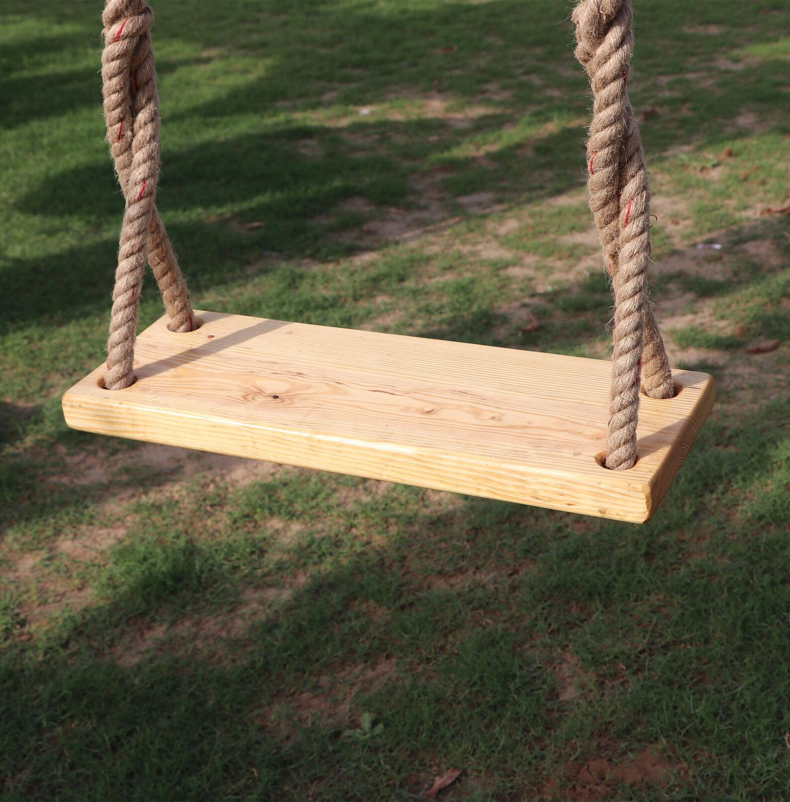

Swing
January 14, 2026
Today I got on a wooden swing
In search of the inexhaustible journey
Of a little girl's afternoon in the playground.
There I found myself, an immobile traveller.
Amid the cheerful cries and laughter
My hands started sweating.
As if seasick, on a ropeless wobble board
I struggled against a vertiginous hurricane
Ripping apart that little girl inside me
Sitting right there in the eye of the storm.
I opened my eyes again.
There was no storm, not even the slightest wind.
Only the usual: time quietly passing.
And I, stiff and silent, on that swing
Secretly contemplating a different journey —
What would happen if I stopped holding the chains?
· · ·
Context & Notes
The poem reflects on an afternoon spent with Y. in a playground in Somerville, where sitting back on a swing awakens memories of childhood and the painful awareness of the impossibility of going backwards in time.
Seeking to reconnect with the innocent and carefree experience of the children, I become confronted with an inner struggle, ending with thoughts of suicide.
Previous Versions
November 17, 2024
Today I went back onto a wooden swing
In search for that unlimited and ethereal journey
Of an outdoor playground's afternoon.
But I found myself an immobile traveller.
Amid the cheerful cries and laughs
My hands started sweating.
As if seasick on a ropeless wobble board
I struggled against the tempest of my soul.
What if I stopped holding those chains?
And there I stood, stiff and silent
Secretly contemplating the possibility
of a quiet journey.
December 1, 2024
Today I got on a wooden swing
In search of the inexhaustible journey
Of a little girl's afternoon in the playground.
But there I found myself an immobile traveller.
Amid the cheerful cries and laughter
My hands started sweating.
As if seasick, on a ropeless wobble board
I struggled against a vertiginous hurricane
Ripping apart that little girl
Sitting right there in the eye of the storm.
I opened my eyes again.
There was no storm, not even the slightest wind.
Only the usual: time sneakily passing.
And I, stiff and silent, on that swing
Secretly contemplating a different journey -
What would happen if I stopped holding those chains?
Comments
If this poem stirred something in you, share a thought below.